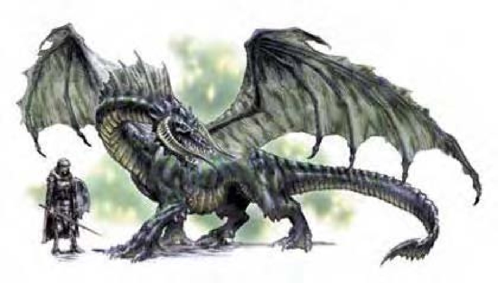

龙头极似骷髅，眼睛深陷，鼻孔宽平，角向前弯曲，节状头冠在头颈之间四分之三处逐渐变细。黑龙四周充满酸味，鳞片呈乌黑或深灰色。
黑龙的脾气暴躁，性格奸诈、恶毒，正如同他狡猾邪恶的面孔。
由于他骸骨般的面孔，黑龙有时候又被称作骸骨龙。角根与颧骨四周逐渐退化的外皮更加深此印象。这种退化会随着年龄而增加，但不会对黑龙造成伤害。刚孵化的时候，黑龙的鳞片既薄又小且光滑，随着年龄增长，鳞片变大变厚，颜色也更灰暗，让黑龙更容易隐藏在沼地或沼泽之中。
黑龙将巢穴建筑在潮湿、宽大、具有许多隔间的地底洞穴里。他们身上带有一股臭味，闻起来像是腐烂的蔬果，或是带有酸味的臭水。年龄较大的黑龙会用“植物滋长”将巢穴入口掩盖起来。黑龙主要以鱼类、软体动物和水生生物为食，也会出外猎捕以获得红肉，但喜欢将红肉放置在巢穴内的池塘里“腌渍”几天后再吃。
黑龙特别喜欢钱币，年龄较大的黑龙有时会将人形生物抓来逼问金币、银币和白金币的存放处，然后再将其杀害。
黑龙的环境与社群环境：热暖带沼泽。
组织：雏龙、幼龙、少年龙、青少年龙和青年龙：单独或数尾 (2-5)；成年龙、壮年龙、老年龙、极老龙、古龙、上古龙或太古龙：单独、成双或一家 (1-2，加上2-5个后代)。
挑战级数：雏龙3、幼龙4、少年龙5、青少年龙7、青年龙9、成年龙11、壮年龙14、老年龙16、极老龙18、古龙19、上古龙20、太古龙22。
宝藏：三倍标准。
阵营：总是混乱邪恶。
进化：雏龙5-6HD；幼龙8-9HD；少年龙11-12HD；青少年龙14-15HD；青年龙17-18HD；成年龙20-21HD；壮年龙23-24HD；老年龙26-27HD；极老龙29-30HD；古龙32-33HD；上古龙35-36HD；太古龙38+ HD。
等级修正值：雏龙+3；幼龙+3；少年龙+3；青少年龙+4；其余无。
| 资料栏位 | 青年黑龙 (Young Black Dragon) 大型龙 (水系) |
| 生命骰 | 16d12+48 (152HP) |
| 先攻 | +0 |
| 速度 | 60英尺 (12格)、飞行150英尺 (不良)、游泳60英尺 |
| 防御等级 | 25 (-1体型、+16天生)、接触9、措手不及25 |
| 基本攻击/擒抱 | +16 / +24 |
| 攻击 | 啮咬+20近战 (2d6+4) |
| 全力攻击 | 啮咬+20近战 (2d6+4) 及 2爪抓+17近战 (1d8+2) 及 2翼击+17近战 (1d6+2) 及 尾巴拍击+17近战 (1d8+6) |
| 占据/触及 | 10英尺 / 5英尺 (啮咬时10英尺) |
| 特殊攻击 | 喷吐攻击、“黑暗术”、威势、法术 |
| 特殊能力 | 替代视觉60英尺、伤害减免5 / 魔法、黑暗视觉120英尺、对强酸/“睡眠术”/麻痹免疫、昏暗视觉、法术抗力17、水中呼吸 |
| 豁免 | 强韧+13、反射+10、意志+11 |
| 属性 | 力量19、敏捷10、体质17、智力12、感知13、魅力12 |
| 技能与专长 | 唬骗+9、攀爬+20、交涉+10、躲藏+8、威吓+19、聆听+17、潜行+16、搜索+17、语言6级、侦察+17、游泳+12 专长：精通天生防具、多重攻击、猛力攻击、攫取、专攻武器 (啮咬)、翻转 |
| 环境/阵营/CR | 热暖带沼泽 / 总是混乱邪恶 / 挑战级数：9 |
黑龙喜欢利用周遭环境作为掩护来突袭他的目标，在密林中的沼泽区域战斗时，会尽量待在水或地面，因为树木和茂盛的枝叶会限制他们在空中的灵活性。当明显不敌时，会试图飞离敌人的视野或躲到池塘或沼泽的深处，不留下任何踪迹。
喷吐攻击 (超自然)：黑龙只有一种喷吐攻击，射出直线状的强酸。青年黑龙：80英尺直线，10d4点强酸伤害，通过反射检定 (DC=21) 则伤害减半。
水中呼吸 (特异)：黑龙可以在水中呼吸，潜水时仍可使用喷吐攻击、法术及其他能力。
“腐化水质” (类法术)：每天一次，成年龙或更老的的龙可以淤塞10立方英尺的水，成为污浊的死水，水中生物无法生存。这项能力也能使含有水质的液体腐化。魔法物品 (例如药水) 及生物所持有的物品必须进行意志检定 (DC同威势的DC)，否则腐化。此能力等同于一级法术。距离也和龙的威势相同。
“魅惑爬虫类” (类法术)：太古黑龙每天可以使用此能力三次，效果如同法术“集体魅惑”，但只对爬虫类有效。龙可以跟任何被魅惑的爬虫类交谈，如同施展“动物交谈”。此能力等同同一级法术。
其他类法术能力：每天3次――“黑暗术” (青少年龙或更老的龙，半径10英尺x年龄层)、“疫病虫群” (古龙或更老的龙)；每天1次――“植物滋长” (老年龙或更老的龙)。
技能：“躲藏”、“潜行”、“游泳”为黑龙的本职技能。
青年黑龙类法术能力：每天3次――半径50英尺，效果如同黑暗术。施法者等级5。
威势 (特异)：半径150英尺，对HD15以下的生物有效，通过意志检定 (DC=19) 则无效。
青年黑龙法术：视同一级术士。
一般已知术士法术 (5/4；豁免检定DC=11+法术等级)：
零级――“晕眩术”、“侦测魔法”、“冷冻射线”、“提升抗力”；
一级――“法师护甲”、“防护善良”。
| 年龄层 | 体型 | 生命骰 (HP) | 力 | 敏 | 体 | 智 | 感 | 魅 | 基本攻击/擒抱 | 基本攻击 | 强韧 | 反射 | 意志 | 喷吐攻击 (DC) | 威势DC |
|---|---|---|---|---|---|---|---|---|---|---|---|---|---|---|---|
| 雏龙 | 微 | 4d12+4 (30) | 11 | 10 | 13 | 8 | 11 | 8 | +4 / -4 | +6 | +5 | +4 | +4 | 2d4 (13) | ― |
| 幼龙 | 小 | 7d12+7 (52) | 13 | 10 | 13 | 8 | 11 | 8 | +7 / +4 | +9 | +6 | +5 | +5 | 4d4 (14) | ― |
| 少年龙 | 中 | 10d12+20 (85) | 15 | 10 | 15 | 10 | 11 | 10 | +10 / +12 | +12 | +9 | +7 | +7 | 6d4 (17) | ― |
| 青少年龙 | 中 | 13d12+26 (110) | 17 | 10 | 15 | 10 | 11 | 10 | +13 / +16 | +16 | +10 | +8 | +8 | 8d4 (18) | ― |
| 青年龙 | 大 | 16d12+48 (152) | 19 | 10 | 17 | 12 | 13 | 12 | +16 / +24 | +19 | +13 | +10 | +11 | 10d4 (21) | 19 |
| 成年龙 | 大 | 19d12+76 (199) | 23 | 10 | 19 | 12 | 13 | 12 | +19 / +29 | +24 | +15 | +11 | +12 | 12d4 (23) | 20 |
| 壮年龙 | 超大 | 22d12+110 (253) | 27 | 10 | 21 | 14 | 15 | 14 | +22 / +38 | +28 | +18 | +13 | +15 | 14d4 (26) | 23 |
| 老年龙 | 超大 | 25d12+125 (287) | 29 | 10 | 21 | 14 | 15 | 14 | +25 / +42 | +32 | +19 | +14 | +16 | 16d4 (27) | 24 |
| 极老龙 | 超大 | 28d12+168 (350) | 31 | 10 | 23 | 16 | 17 | 16 | +28 / +46 | +36 | +22 | +16 | +19 | 18d4 (30) | 27 |
| 古龙 | 超大 | 31d12+186 (387) | 33 | 10 | 23 | 16 | 17 | 16 | +31 / +50 | +40 | +23 | +17 | +20 | 20d4 (31) | 28 |
| 上古龙 | 巨 | 34d12+238 (459) | 35 | 10 | 25 | 18 | 19 | 18 | +34 / +58 | +42 | +26 | +19 | +23 | 22d4 (34) | 31 |
| 太古龙 | 巨 | 37d12+296 (536) | 37 | 10 | 27 | 20 | 21 | 20 | +37 / +62 | +46 | +28 | +20 | +25 | 24d4 (36) | 33 |
| 年龄层 | 速度 | 先攻权 | 防御等级 | 特殊能力 | 施法者等级 | SR |
|---|---|---|---|---|---|---|
| 雏龙 | 60英尺、飞行100英尺 (普通)、游泳60英尺 | +0 | 15 (+2体型、+3天生)、接触12、措手不及15 | 对强酸免疫、水中呼吸 | ― | ― |
| 幼龙 | 60英尺、飞行100英尺 (普通)、游泳60英尺 | +0 | 17 (+1体型、+6天生)、接触11、措手不及17 | 对强酸免疫、水中呼吸 | ― | ― |
| 少年龙 | 60英尺、飞行150英尺 (不良)、游泳60英尺 | +0 | 19 (+9天生)、接触10、措手不及19 | 对强酸免疫、水中呼吸 | ― | ― |
| 青少年龙 | 60英尺、飞行150英尺 (不良)、游泳60英尺 | +0 | 22 (+12天生)、接触10、措手不及22 | “黑暗术” | ― | ― |
| 青年龙 | 60英尺、飞行150英尺 (不良)、游泳60英尺 | +0 | 24 (-1体型、+15天生)、接触9、措手不及24 | 伤害减免5 / 魔法 | 1级 | 17 |
| 成年龙 | 60英尺、飞行150英尺 (不良)、游泳60英尺 | +0 | 27 (-1体型、+18天生)、接触9、措手不及27 | “腐化水质” | 3级 | 18 |
| 壮年龙 | 60英尺、飞行150英尺 (不良)、游泳60英尺 | +0 | 29 (-2体型、+21天生)、接触8、措手不及29 | 伤害减免10 / 魔法 | 5级 | 21 |
| 老年龙 | 60英尺、飞行150英尺 (不良)、游泳60英尺 | +0 | 32 (-2体型、+24天生)、接触8、措手不及32 | “植物滋长” | 7级 | 22 |
| 极老龙 | 60英尺、飞行150英尺 (不良)、游泳60英尺 | +0 | 35 (-2体型、+27天生)、接触8、措手不及35 | 伤害减免15 / 魔法 | 9级 | 23 |
| 古龙 | 60英尺、飞行150英尺 (不良)、游泳60英尺 | +0 | 38 (-2体型、+30天生)、接触8、措手不及38 | “疫病虫群” | 11级 | 25 |
| 上古龙 | 60英尺、飞行200英尺 (笨拙)、游泳60英尺 | +0 | 39 (-4体型、+33天生)、接触6、措手不及39 | 伤害减免20 / 魔法 | 13级 | 26 |
| 太古龙 | 60英尺、飞行200英尺 (笨拙)、游泳60英尺 | +0 | 42 (-4体型、+36天生)、接触6、措手不及42 | “魅惑爬虫类” | 15级 | 28 |